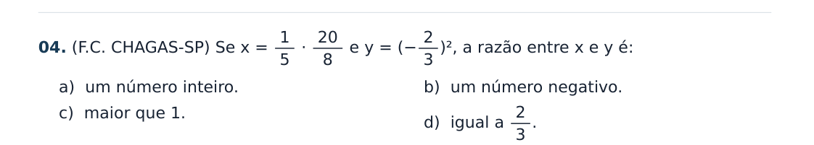
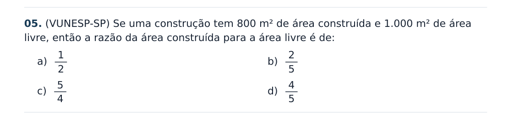
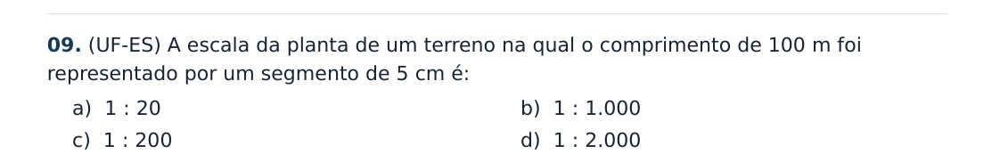
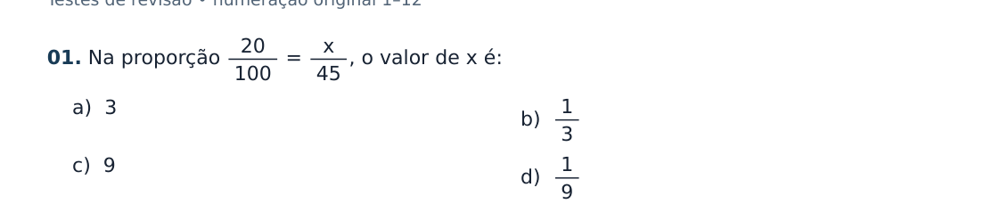
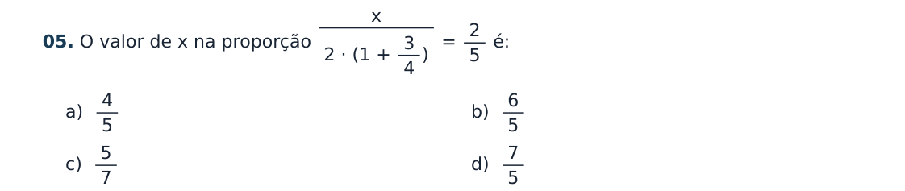
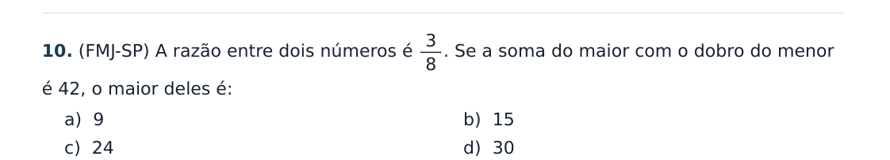
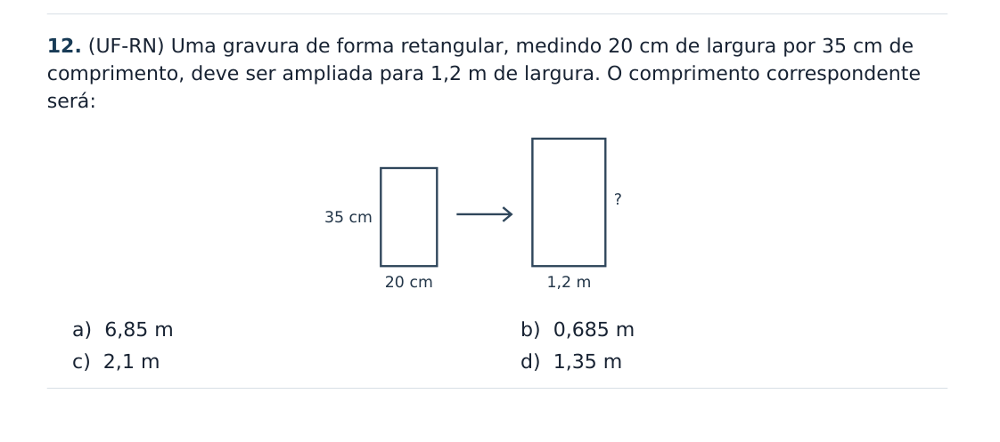

Abrir todos os gabaritos Ocultar gabaritos Recomeçar Imprimir
Leia o enunciado original (clique na imagem para ampliar), marque uma alternativa e confira. Os gabaritos foram resolvidos para este material, não transcritos de gabaritos oficiais.
Fotografias · Razão · questão 02
A) 9 8 B) 8 9 C) 1 2 D) 3 2
Conferir alternativa
🔽 Ver gabarito comentado Vamos resolver juntos, uma etapa de cada vez.
Substitua as letras pelos valores A questão dá x = 2/3 e y = 3/4. A razão solicitada é y dividido por x, nessa ordem.
y x 3 4 2 3
Inverta a segunda fração Dividir por 2/3 equivale a multiplicar por seu inverso, 3/2.
3 4 3 2
Multiplique os numeradores Os dois números de cima são 3 e 3.
3 × 3 = 9
Multiplique os denominadores Os números de baixo são 4 e 2.
4 × 2 = 8
Monte a resposta 9 e 8 não possuem divisor comum maior que 1.
9 8
Gabarito: A) 9 8
Fotografias · Razão · questão 03
A) 9B) 1 9 C) −9D) −1 9
Conferir alternativa
🔽 Ver gabarito comentado Vamos resolver juntos, uma etapa de cada vez.
Escreva a razão como divisão O primeiro número é −3, o segundo é 1/3. Escrevemos −3 como −3/1 porque dividir por 1 mantém o valor.
−3 1 1 3
Troque a divisão pela multiplicação Inverta somente a segunda fração.
−3 1 3 1
Multiplique os numeradores Sinais diferentes dão resultado negativo.
−3 × 3 = −9
Multiplique os denominadores e conclua 1 × 1 = 1. Dividir −9 por 1 dá −9.
−9 1
Gabarito: C) −9
Fotografias · Razão · questão 04

A) Um número inteiroB) Um número negativoC) Maior que 1D) Igual a 2 3
Conferir alternativa
🔽 Ver gabarito comentado Vamos resolver juntos, uma etapa de cada vez.
Calcule x primeiro Multiplique numeradores e denominadores das duas frações.
x = 1 5 20 8
x = 1 × 20 5 × 8
x = 20 40
Simplifique x Divida os dois termos por 20.
x = 20 ÷ 20 40 ÷ 20
x = 1 2
Calcule y Elevar ao quadrado significa multiplicar por si mesmo. Os dois sinais negativos dão produto positivo.
y = −2 3 −2 3
y = (−2) × (−2) 3 × 3
y = 4 9
Monte a razão x/y Substitua x e y pelos resultados. Inverta a segunda fração e multiplique.
1 2 4 9
1 2 9 4
1 × 9 2 × 4
9 8
Compare com 1 O numerador 9 é maior que o denominador 8. 8/8 é 1, então 9/8 é maior que 1. Não é inteiro nem negativo.
9 8
Gabarito: C) Maior que 1 (9 8
Fotografias · Razão · questão 05

A) 1 2 B) 2 5 C) 5 4 D) 4 5
Conferir alternativa
🔽 Ver gabarito comentado Vamos resolver juntos, uma etapa de cada vez.
200 m² 200 m² 200 m² 200 m² 200 m² 200 m² 200 m² 200 m² 200 m²
Cada bloco tem o mesmo valor. Os dois grupos são identificados pelas cores e pela ordem.
Identifique as áreas Área construída: 800 m². Área livre: 1.000 m². O pedido é construída para livre, não construída para a área total.
Monte a razão As duas medidas estão na mesma unidade, então podemos dividir diretamente.
800 1.000
Simplifique Divida o numerador e o denominador por 200.
800 ÷ 200 = 4
1.000 ÷ 200 = 5
4 5
Interprete Para cada quatro partes de área construída, há cinco de área livre.
Gabarito: D) 4 5
Fotografias · Razão · questão 06
A) 7B) 1 7 C) 2D) 2 7
Conferir alternativa
🔽 Ver gabarito comentado Vamos resolver juntos, uma etapa de cada vez.
Resolva o primeiro termo Escreva 1 como 2/2 para subtrair frações com denominadores iguais.
1 − 1 2
2 2 1 2
(2 − 1) 2 1 2
Resolva o segundo termo Escreva 3 como 6/2, pois 6 ÷ 2 = 3. Some apenas os numeradores.
3 + 1 2
6 2 1 2
(6 + 1) 2 7 2
Monte a razão Divida o resultado do primeiro termo pelo segundo.
1 2 7 2
Inverta a segunda fração e multiplique A primeira fica igual; a segunda vira 2/7.
1 2 2 7
1 × 2 2 × 7
2 14
Simplifique Divida ambos os termos por 2.
2 ÷ 2 14 ÷ 2
1 7
Gabarito: B) 1 7
Fotografias · Razão · questão 07
A) 2B) 1 2 C) 3D) 1 3
Conferir alternativa
🔽 Ver gabarito comentado Vamos resolver juntos, uma etapa de cada vez.
Descubra quantos foram reprovados Dos 90 candidatos, 30 passaram. Retire os aprovados do total.
90 − 30 = 60
Monte a razão na ordem pedida A razão é uma divisão. Reprovados ficam em cima e aprovados embaixo.
60 30
Efetue a divisão 30 cabe duas vezes em 60, pois 30 × 2 = 60.
60 ÷ 30 = 2
Interprete Para cada aprovado, há dois reprovados. A razão é 2:1.
Gabarito: A) 2
Fotografias · Razão · questão 08
A) João obteve melhor resultado.B) Luís obteve melhor resultado.C) Mauro obteve melhor resultado.D) Os resultados foram equivalentes.
Conferir alternativa
🔽 Ver gabarito comentado Vamos resolver juntos, uma etapa de cada vez.
Escolha uma comparação justa Os estudantes responderam quantidades diferentes de testes. Por isso, compare a proporção de acertos, e não apenas o número de acertos.
Calcule o desempenho de João Divida os sete acertos por 15 testes e multiplique por 100 para obter o percentual.
7 15
0,4667 × 100 ≈ 46,67%
Calcule o desempenho de Luís Ele acertou 11 dos 21 testes.
11 21
0,5238 × 100 ≈ 52,38%
Calcule o desempenho de Mauro Ele acertou nove dos 18 testes, exatamente a metade.
9 18
0,5 × 100 = 50%
Compare os resultados 52,38% é maior do que 50% e 46,67%. Portanto, Luís teve o melhor desempenho.
Gabarito: B) Luís obteve o melhor resultado.
Fotografias · Razão · questão 09

A) 1:20B) 1:1.000C) 1:200D) 1:2.000
Conferir alternativa
🔽 Ver gabarito comentado Vamos resolver juntos, uma etapa de cada vez.
Identifique as medidas A escala é a medida do desenho dividida pela medida real. As unidades devem ser iguais.
E = medida no desenho medida real
Converta metros em centímetros Cada metro tem 100 centímetros. Multiplique 100 metros por 100.
100 × 100 = 10.000 cm
Monte a fração O desenho tem 5 cm; a medida real é 10.000 cm.
E = 5 10.000
Simplifique Divida numerador e denominador pelo mesmo número, 5, para obter 1 no numerador.
E = 5 ÷ 5 10.000 ÷ 5
E = 1 2.000
Interprete 1 cm no desenho representa 2.000 cm na realidade, isto é, 20 m.
Gabarito: D) 1:2.000
Fotografias · Proporção · questão 01

A) 3B) 1 3 C) 9D) 1 9
Conferir alternativa
🔽 Ver gabarito comentado Vamos resolver juntos, uma etapa de cada vez.
Observe a igualdade A proporção é uma igualdade entre duas razões. x é o número desconhecido.
20 100 x 45
Multiplique em cruz Multiplique 20 por 45 e 100 por x.
20 × 45 = 100 × x
900 = 100x
Isole x Divida os dois lados por 100 para retirar o fator que multiplica x.
900 100 100x 100
9 = x
Confira 20/100 simplifica para 1/5. E 9/45 também simplifica para 1/5, confirmando a proporção.
Gabarito: C) 9
Fotografias · Proporção · questão 02
A) 5B) 1 5 C) 10D) 1 10
Conferir alternativa
🔽 Ver gabarito comentado Vamos resolver juntos, uma etapa de cada vez.
Identifique a incógnita x é o número desconhecido. 2x significa 2 × x. Como 2x está no denominador, x não pode ser zero.
75 = 15 2x
Escreva 75 como fração Qualquer número inteiro pode ser dividido por 1 sem mudar de valor.
75 1 15 2x
Multiplique em cruz Multiplique o numerador da esquerda pelo denominador da direita, e o denominador da esquerda pelo numerador da direita.
75 × 2x = 1 × 15
150x = 15
Isole x O 150 está multiplicando x. Divida os dois lados por 150 para que o coeficiente de x seja 1.
150x 150 15 150
x = 15 150
Simplifique Divida em cima e embaixo por 15.
x = 15 ÷ 15 150 ÷ 15
x = 1 10
Confira O resultado não é zero e 2 × 0,1 = 0,2. Dividir 15 por 0,2 dá 75.
Gabarito: D) 1 10
Fotografias · Proporção · questão 03
A) 2B) 4C) 8D) 16
Conferir alternativa
🔽 Ver gabarito comentado Vamos resolver juntos, uma etapa de cada vez.
Monte a proporção x é o valor desconhecido. O denominador 7 + x não pode ser zero, portanto x ≠ −7.
2 3 4 + x 7 + x
Multiplique em cruz Multiplique 2 pelo denominador do lado direito e 3 pelo numerador do lado direito.
2 × (7 + x) = 3 × (4 + x)
Aplique a distributiva O número de fora multiplica cada termo dentro dos parênteses.
2 × 7 + 2 × x = 3 × 4 + 3 × x
14 + 2x = 12 + 3x
Reúna os termos com x Subtraia 2x dos dois lados para manter a igualdade e deixar x apenas à direita.
14 + 2x − 2x = 12 + 3x − 2x
14 = 12 + x
Isole x Subtraia 12 dos dois lados.
14 − 12 = 12 + x − 12
2 = x
Confira Substitua x = 2 na razão original. O denominador é 9, diferente de zero.
4 + 2 7 + 2 6 9 2 3
Gabarito: A) 2
Fotografias · Proporção · questão 04
A) 5B) 50C) 0,5D) 0,05
Conferir alternativa
🔽 Ver gabarito comentado Vamos resolver juntos, uma etapa de cada vez.
Escreva a proporção x é o denominador desconhecido e não pode ser zero.
1,25 x 0,5 2
Multiplique em cruz O 1,25 multiplica 2; o x multiplica 0,5.
1,25 × 2 = 0,5 × x
2,5 = 0,5x
Isole x Divida ambos os lados por 0,5.
x = 2,5 0,5
Resolva a divisão decimal Multiplique dividendo e divisor por 10 para eliminar as vírgulas sem alterar o quociente.
x = 2,5 × 10 0,5 × 10
x = 25 5
x = 5
Confira 1,25 ÷ 5 = 0,25 e 0,5 ÷ 2 = 0,25. Os dois lados são iguais.
Gabarito: A) 5
Fotografias · Proporção · questão 05

A) 4 5 B) 6 5 C) 5 7 D) 7 5
Conferir alternativa
🔽 Ver gabarito comentado Vamos resolver juntos, uma etapa de cada vez.
Resolva os parênteses primeiro O inteiro 1 equivale a 4/4. Assim podemos somar os numeradores e manter 4 embaixo.
1 + 3 4
4 4 3 4
(4 + 3) 4 7 4
Resolva a multiplicação do denominador Escreva 2 como 2/1 e multiplique numeradores e denominadores.
2 1 7 4
2 × 7 1 × 4
14 4 7 2
Reescreva a proporção O denominador do lado esquerdo agora é 7/2. O lado direito continua 2/5.
x ÷ (7 2 2 5
Isole x Multiplique ambos os lados por 7/2, que cancela a divisão do lado esquerdo.
x = 2 5 7 2
Multiplique e simplifique Multiplique em cima e embaixo. Depois divida por 2.
x = 2 × 7 5 × 2
x = 14 10
x = 14 ÷ 2 10 ÷ 2
x = 7 5
Gabarito: D) 7 5
Fotografias · Proporção · questão 06
A) 9 5 B) 7 30 C) 1 10 D) −1 10
Conferir alternativa
🔽 Ver gabarito comentado Vamos resolver juntos, uma etapa de cada vez.
Comece pelo numerador da esquerda Multiplicação tem prioridade sobre subtração. Escreva 3 como 3/1.
1 2 3 1
1 × 3 2 × 1 3 2
Faça a subtração Para subtrair 3/2 de 2, escreva 2 como 4/2. Agora os denominadores são iguais.
2 − 3 2
4 2 3 2
(4 − 3) 2 1 2
Calcule a fração inteira do lado esquerdo A barra maior indica que o resultado anterior é dividido por 5. Inverta 5/1 para multiplicar.
1 2 5 1
1 2 1 5
1 × 1 2 × 5 1 10
Calcule o denominador da direita Escreva 1 como 3/3. Some os numeradores.
4 3
4 3 3 3
(4 + 3) 3 7 3
Reescreva a igualdade e isole x O lado direito é x dividido por 7/3. Multiplique ambos os lados por 7/3.
1 10 7 3
x = 1 10 7 3
Multiplique as frações Multiplique os numeradores e, em seguida, os denominadores.
1 × 7 = 7
10 × 3 = 30
x = 7 30
Gabarito: B) 7 30
Fotografias · Proporção · questão 07
A) x = 1B) 0 < x < 1 2 C) x < 0D) 1 3
Conferir alternativa
🔽 Ver gabarito comentado Vamos resolver juntos, uma etapa de cada vez.
Resolva o denominador da esquerda Escreva 1 como 5/5 para somar.
1 + 1 5
5 5 1 5
(5 + 1) 5 6 5
Resolva o denominador da direita O sinal de dois pontos indica divisão. Dividir 1 por 1/3 equivale a multiplicar 1 por 3.
1 ÷ 1 3
1 × 3 1
Reescreva a proporção Substitua os denominadores calculados.
x ÷ (6 5 2 3
Isole x Multiplique os dois lados por 6/5.
x = 2 3 6 5
x = 2 × 6 3 × 5
x = 12 15
Simplifique Divida o numerador e o denominador por 3.
x = 12 ÷ 3 15 ÷ 3
x = 4 5
Compare com os limites 4/5 = 0,8; 1/3 ≈ 0,333. Assim 0,8 está entre 1/3 e 1, não entre 0 e 1/2.
0,333… < 0,8 < 1
Gabarito: D) 1 3
Fotografias · Proporção · questão 08
A) 2 e 5B) 1 4 1 5 C) 2 e 36D) 5 e 35
Conferir alternativa
🔽 Ver gabarito comentado Vamos resolver juntos, uma etapa de cada vez.
Simplifique a razão conhecida 5/20 é a única fração sem incógnita. Divida ambos os termos por 5.
5 ÷ 5 20 ÷ 5 1 4
Descubra x Todas as razões são iguais. Compare x/8 com 1/4.
x 8 1 4
4 × x = 8 × 1
4x = 8
Isole x Divida os dois lados por 4.
x = 8 4
x = 2
Descubra y Compare 9/y com 1/4 e multiplique em cruz. y não pode ser zero.
9 y 1 4
9 × 4 = y × 1
36 = y
Confira as duas respostas 9/36, 2/8 e 5/20 simplificam para 1/4. A pergunta pede x e y, nessa ordem.
9 36 2 8 5 20 1 4
Gabarito: C) x = 2 e y = 36
Fotografias · Proporção · questão 09
A) 5 2 B) 5 6 C) 1 5 D) 2 5
Conferir alternativa
🔽 Ver gabarito comentado Vamos resolver juntos, uma etapa de cada vez.
Substitua a e b A equação dada é 1/a + 1/b = 1/c. Temos a = 1/2 e b = 1/3.
Calcule 1/a Uma fração no denominador significa divisão por essa fração. Inverta a segunda e multiplique.
1 ÷ 1 2
1 × 2 1
Calcule 1/b Repita o mesmo processo.
1 ÷ 1 3
1 × 3 1
Some os resultados O lado esquerdo é igual a 1/c.
2 + 3 = 1 c
5 = 1 c
Encontre c Escreva 5 como 5/1 e multiplique em cruz.
5 1 1 c
5c = 1
Isole c Divida ambos os lados por 5.
c = 1 5
Confira 1 dividido por 1/5 é 5, exatamente o valor encontrado no lado esquerdo.
Gabarito: C) 1 5
Fotografias · Proporção · questão 10

A) 9B) 15C) 24D) 30
Conferir alternativa
🔽 Ver gabarito comentado Vamos resolver juntos, uma etapa de cada vez.
k k k k k k k k k k k
Cada bloco tem o mesmo valor. Os dois grupos são identificados pelas cores e pela ordem.
Interprete a razão 3:8 O número menor possui três partes iguais e o maior possui oito. Chamaremos o valor de cada parte de k.
Menor = 3k
Maior = 8k
Traduza a frase do enunciado A soma do maior com o dobro do menor é 42. Dobro significa multiplicar por 2.
8k + 2 × 3k = 42
Resolva a multiplicação 2 × 3k = 6k, pois temos duas vezes três partes.
8k + 6k = 42
Some os termos semelhantes São 8 partes mais 6 partes, todas do mesmo tamanho.
14k = 42
Descubra o tamanho de uma parte Divida ambos os lados por 14.
k = 42 14
k = 3
Calcule o maior número Ele possui oito partes de valor 3.
8 × 3 = 24
Confira O menor é 3 × 3 = 9. A razão 9/24 simplifica para 3/8 e 24 + 2 × 9 = 42.
Gabarito: C) 24
Fotografias · Proporção · questão 11
A) 9 brasileiras e 27 estrangeirasB) 27 brasileiras e 9 estrangeirasC) 24 brasileiras e 12 estrangeirasD) 12 brasileiras e 24 estrangeiras
Conferir alternativa
🔽 Ver gabarito comentado Vamos resolver juntos, uma etapa de cada vez.
9 fitas 9 fitas 9 fitas 9 fitas
Cada bloco tem o mesmo valor. Os dois grupos são identificados pelas cores e pela ordem.
Entenda a razão Para cada três fitas brasileiras, há uma estrangeira. Cada grupo completo possui quatro fitas.
3 + 1 = 4
Descubra quantos grupos existem Divida o total de 36 fitas pelas quatro de cada grupo.
36 ÷ 4 = 9 grupos
Calcule as fitas brasileiras Cada grupo contém três brasileiras.
3 × 9 = 27 brasileiras
Calcule as fitas estrangeiras Cada grupo contém uma estrangeira.
1 × 9 = 9 estrangeiras
Confira o total O resultado deve somar 36 e respeitar a razão 3:1.
27 + 9 = 36
Gabarito: B) 27 brasileiras e 9 estrangeiras
Fotografias · Proporção · questão 12

A) 6,85 mB) 0,685 mC) 2,1 mD) 1,35 m
Conferir alternativa
🔽 Ver gabarito comentado Vamos resolver juntos, uma etapa de cada vez.
Medida Original (cm) Ampliada (cm) Largura 20 120 Comprimento 35 210
Identifique as medidas A largura original é 20 cm e o comprimento original é 35 cm. A nova largura é 1,2 m.
Converta a largura Como 1 m = 100 cm, multiplique 1,2 por 100 para comparar medidas em centímetros.
1,2 × 100 = 120 cm
Encontre o fator de ampliação Divida a largura nova pela largura antiga. O fator mostra quantas vezes a figura cresceu.
k = 120 20
k = 6
Calcule o novo comprimento Uma ampliação proporcional usa o mesmo fator nas duas dimensões.
35 × 6 = 210 cm
Volte para metros Como 100 cm correspondem a 1 m, divida por 100.
210 ÷ 100 = 2,1 m
Confira a proporção A largura ficou seis vezes maior, e o comprimento também. A forma foi preservada.
Gabarito: C) 2,1 m